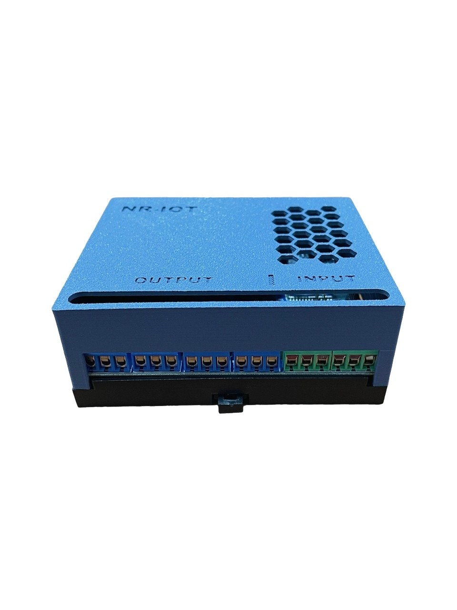
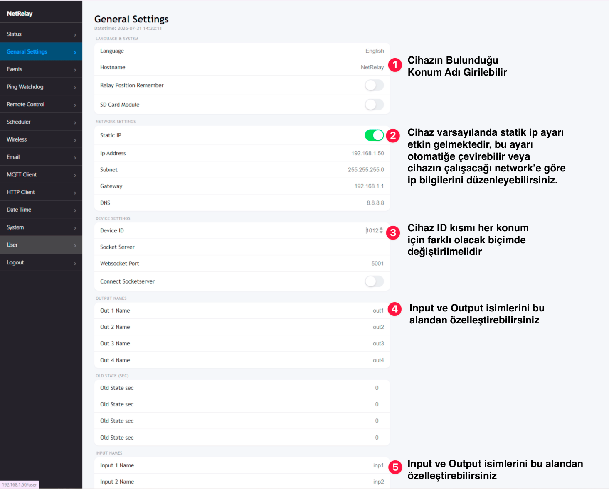
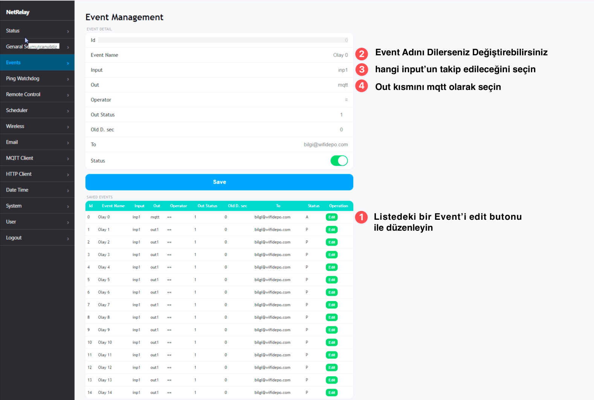
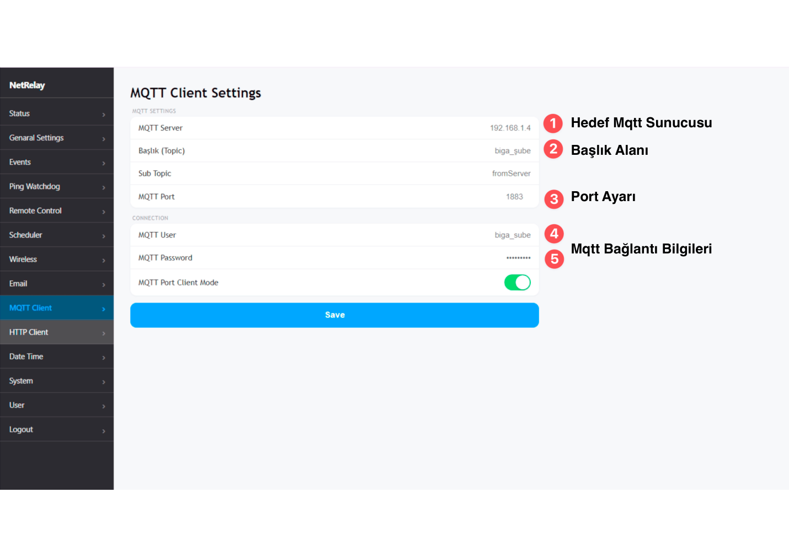
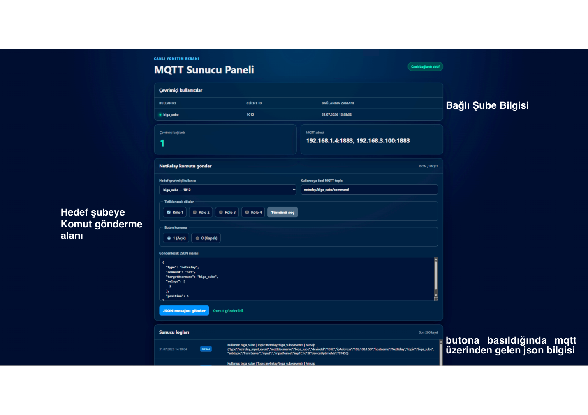

Bulut zorunluluğu yok
Broker, panel ve cihazlar yerel ağ üzerinde çalışabilir. İnternet kesintisi yerel otomasyonu durdurmaz.
Dört röle çıkışını uzaktan kontrol edin, dört dijital girişteki değişimleri anlık izleyin ve birden fazla şubeyi tek merkez panelden güvenli biçimde yönetin.

Bu kurulumda her NetRelay cihazı MQTT broker’a kendine ait kullanıcı hesabıyla bağlanır. Merkez panel çevrimiçi cihazları gösterir, yalnızca seçilen cihaza komut yollar ve cihazdan gelen giriş/röle değişimlerini JSON olarak kaydeder.
250 V AC gibi tehlikeli gerilimlerle çalışma yalnızca yetkili ve ehil personel tarafından yapılmalıdır. Enerji vermeden önce bağlantıları ayırın, uygun sigorta ve muhafaza kullanın. Röle kapasitesi yük karakteristiği ve ürün varyantına göre doğrulanmalıdır.
Broker, panel ve cihazlar yerel ağ üzerinde çalışabilir. İnternet kesintisi yerel otomasyonu durdurmaz.
Her cihaz yalnızca kendi netrelay/<kullanıcı>/command topic’ini dinler.
GPIO değişimleri cihaz kimliği, hostname, IP ve çalışma süresiyle JSON olarak yayınlanır.
Çevrimiçi kullanıcılar ve loglar, sayfa yenilemeden merkez panelde güncellenir.
Komutlar panelden broker’a, broker’dan yalnızca hedef cihaza gider. Donanım olayları ters yönde event topic’i üzerinden merkeze ulaşır.
netrelay/biga_sube/commandMerkez → cihaz komutunetrelay/biga_sube/eventsCihaz → merkez olaylarıHer kurulum noktasını benzersiz ve anlaşılır biçimde tanımlamak, merkez panelde doğru cihazı seçmenin temelidir.
Cihaz web arayüzünde General Settings sayfasını açın.
NetRelay-Biga.1012.KapiKilidi, YanginAlarmi.
Events sayfasında izlemek istediğiniz event kaydını düzenleyin.
mqtt yapın.
NetRelay web arayüzündeki MQTT Client sayfasında broker ve hesap bilgilerini girin.
| Alan | Önerilen değer | Açıklama |
|---|---|---|
| MQTT Server | 192.168.1.4 | Node.js broker’ın yerel ağ IP adresi. |
| Başlık (Topic) | biga_şube | Cihazın yapılandırılmış yayın başlığı. |
| Sub Topic | fromServer | Mevcut cihaz iş akışlarında kullanılan alt topic. |
| MQTT Port | 1883 | TLS kullanılmayan standart MQTT portu. |
| MQTT User | biga_sube | Paneldeki MQTT Kullanıcıları bölümünde oluşturulan benzersiz ve aktif kullanıcı adı. |
| MQTT Password | GİZLİ | Sunucudaki kullanıcı kaydıyla birebir eşleşmelidir. |
| Client Mode | AKTİF | Kaydettikten sonra MQTT bağlantısını etkinleştirir. |

Firmware, merkez komutları için ayrıca netrelay/<mqttUsername>/command topic’ine otomatik abone olur ve olayları netrelay/<mqttUsername>/events topic’ine yayınlar.
Merkez panelde çevrimiçi kullanıcıyı seçin; bir veya daha fazla röleyi işaretleyin; konumu 1 (Açık) ya da 0 (Kapalı) olarak belirleyip JSON mesajını gönderin.

{
"type": "netrelay",
"command": "set",
"targetUsername": "biga_sube",
"relays": [1, 3],
"position": 1,
"delay": 3
}{
"type": "netrelay",
"command": "set",
"targetUsername": "biga_sube",
"relays": [1, 2, 3, 4],
"position": 0,
"delay": 0
}Gecikmeli geri dönüş: delay: 0 röleyi yeni konumunda bırakır. Pozitif bir değer röleyi belirtilen saniye sonunda komut öncesindeki konumuna döndürür.
Hedefleme garantisi: Broker topic’i seçilen çevrimiçi kullanıcıdan üretir. Firmware ayrıca targetUsername alanını kendi MQTT hesabıyla karşılaştırır; uyuşmayan komutu uygulamaz.
Input ve röle değişimleri kullanıcı, cihaz, IP, hostname ve çalışma süresi bilgileriyle sunucuya ulaşır. Sunucu doğrulanmış MQTT kullanıcı adı ve Client ID değerlerini bağlantıdan alır.
{
"type": "netrelay_input_event",
"mqttUsername": "biga_sube",
"deviceId": "1012",
"ipAddress": "192.168.1.50",
"hostname": "NetRelay-Biga",
"topic": "biga_şube",
"subtopic": "fromServer",
"input": 1,
"inputName": "KapiSensoru",
"io": 1,
"deviceUptimeMs": 4567
}{
"type": "netrelay_relay_event",
"username": "biga_sube",
"clientId": "1012",
"ipAddress": "192.168.1.50",
"hostname": "NetRelay-Biga",
"relay": 2,
"position": 1,
"deviceUptimeMs": 12345
}| Alan | Anlamı |
|---|---|
inputName | General Settings → INPUT NAMES alanındaki kullanıcı tanımlı isim. |
io | Dijital girişin gerçek seviyesi: 0 veya 1. |
position | Röle çıkışının gerçek GPIO seviyesi: 0 veya 1. |
deviceUptimeMs | Cihaz açıldığından beri geçen milisaniye; yeniden başlatmaları anlamaya yardımcı olur. |
serverReceivedAt | Sunucunun normalize edilmiş loga eklediği ISO zaman damgası. |
Node.js MQTT Server yalnızca broker değildir; cihaz, kullanıcı, otomasyon, bildirim, güvenlik ve operasyon işlemlerini tek web panelinde birleştirir.
| Özellik | Açıklama |
|---|---|
| Genel bakış | Çevrimiçi cihazlar, son görülme, IP, hostname, uptime, voltaj, sıcaklık ve bağlantı istatistiklerini gösterir. |
| Cihaz I/O | Dört input ve dört röleyi canlı izler; röleleri iPhone tarzı anahtarlarla kontrol eder. Seçilen cihaza durum senkronizasyonu ve yeniden başlatma komutu gönderilebilir. |
| Bayat cihaz tespiti | MQTT bağlantısı açık kalsa bile durum mesajı belirlenen süre boyunca kesilirse cihazı Bayat işaretler; mesaj yeniden geldiğinde iyileşme kaydı oluşturur. |
| Delta güncellemeleri | WebSocket ilk bağlantıda tam durumu, devamında yalnızca değişen alanları göndererek ağ ve tarayıcı yükünü azaltır. |
Cron, gün doğumu veya gün batımına göre röle çalıştırır. Geri alma süresi, tatil/istisna günleri, çalışma geçmişi ve cihaz çevrimdışıysa bağlandığında çalıştırma kuyruğu desteklenir.
Input, sıcaklık veya voltaj koşuluna göre röle konumu değiştirme, SMTP e-posta ve Netgsm REST v2 SMS eylemlerini sıralı çalıştırır. Kurallar düzenlenebilir, silinebilir ve aktif/pasif yapılabilir.
Şube veya bölge bazlı cihaz grupları oluşturur; tek komutu birden fazla cihaza gönderir ve çevrimdışı hedefler için komut kuyruğu kullanabilir.
ESP32 imajını boyut ve SHA-256 ile doğrular, seçilen cihazlara süreli indirme bağlantısı gönderir ve OTA ilerlemesini panelden izler.
| Panel | İşlev |
|---|---|
| MQTT kullanıcıları | Kullanıcılar SQLite veritabanında tutulur; panelden eklenir, düzenlenir, silinir ve aktif/pasif yapılır. Her hesap yalnızca kendi netrelay/<kullanıcı>/* topic alanına erişebilir. |
| Panel kullanıcıları | Yönetici ve yetkili kullanıcı hesapları; bölüm bazlı izinler, parola değiştirme zorunluluğu, güvenli oturum çerezi ve brute-force hesap kilidi içerir. |
| Olay geçmişi | Röle/input ve cihaz durumu değişikliklerini SQLite’a yazar. Aynı 5 saniyelik heartbeat tekrar kaydedilmez; sensör toleransları uygulanır. MQTT kullanıcıları çoklu seçilebilir ve sonuçlar CSV indirilebilir. |
| Denetim kaydı | Panelde komut gönderen, ayar veya kullanıcı değiştiren hesabı zaman ve uzak IP bilgisiyle kalıcı olarak kaydeder. |
| Yedekleme | SQLite veritabanı ile isteğe bağlı .env ayarlarını tek bir sıkıştırılmış pakete indirir. Geri yükleme bütünlük kontrolünden sonra yeniden başlatmada uygulanır ve mevcut dosyaların geri dönüş kopyası alınır. |
| Log rotasyonu | Günlük cihaz loglarını ayarlanan sürede .gz arşivine dönüştürür ve saklama süresi dolunca siler. İşlem açılışta, altı saatte bir veya panelden elle çalıştırılabilir. |
| Log ayarları | Terminal konsol çıktısı ve ayrıntılı MQTT/TLS debug logu panelden ayrı ayrı açılıp kapatılır; seçimler SQLite’ta saklanır. |
| Arayüz | Açık/koyu tema, mobil menü, N faviconu, iPhone tarzı röle/konum anahtarları ve yetkiye göre görünür menüler desteklenir. |
| Windows servisi | scripts/install-windows-service.ps1 ile NSSM servisi kurulur; Windows açılışında başlar ve hata halinde otomatik yeniden çalışır. PM2 alternatifi de belgelenmiştir. |
Röle, restart, sync, kuyruk ve OTA komutları MQTT QoS 1 kullanır. Sunucu her komuta benzersiz commandId ekler; güncel firmware son işlenen ID’leri tutarak tekrar teslim edilen komutları ikinci kez uygulamaz.
Cron ayrıştırma, olay ayrıştırma, giriş engelleme, değişiklik algılama, çoklu geçmiş filtresi, WebSocket delta ve kalıcı sistem ayarları npm test ile çalışan Node.js testleriyle doğrulanır.
NetRelay MQTT uygulamasını kurmak veya cihaz firmware’ını güncellemek için gerekli paketlere aşağıdan ulaşabilirsiniz.
MQTT broker, kullanıcı doğrulaması, canlı web paneli, WebSocket logları ve hedefli NetRelay röle kontrolü için örnek proje.
MQTT Server GitHub ↗Kaynak kod, güncelleme geçmişi ve kurulum belgeleri GitHub deposundadır.
MQTT QoS 1 komut aboneliği, commandId tekrar koruması, restart/sync, merkezi OTA, röle/input event mesajları, heartbeat, uptime, IP ve hostname desteğini içerir.
ESP32-S3 / 8 MB için doğru partition ve donanım modelini doğrulayın.
Mevcut cihaz ayarlarınızı yedekleyin, doğru donanım sürümünü kullandığınızı doğrulayın ve firmware yüklemesi sırasında cihazın enerjisini kesmeyin.
Şubeler arasında hesap paylaşmayın. Uzun, benzersiz parolalar kullanın; hesapları SQLite tabanlı MQTT Kullanıcıları ekranından yönetin. .env, veritabanı ve yedek paketlerini sürüm kontrolüne eklemeyin.
Cihazları ayrı bir VLAN’da tutun; yalnızca MQTT broker ve gerekli yönetim istemcilerine erişim verin.
Uzak erişimde VPN tercih edin. İnternet üzerinden MQTT gerekiyorsa TLS, sertifika doğrulama ve erişim listeleri kullanın.
Panel oturum doğrulaması, rol/yetki kontrolleri ve giriş denemesi kilidi içerir. Üretimde HTTPS’yi etkinleştirin veya güvenilir bir TLS ters proxy kullanın; paneli doğrudan internete açmayın.
Broker publish/subscribe yetkilendirmesi her MQTT hesabını kendi netrelay/<kullanıcı>/* alanıyla sınırlar. Uyumluluk gerekmedikçe MQTT_TOPIC_ENFORCEMENT=1 kullanın.
MQTT TLS 1.2+, CA doğrulaması ve isteğe bağlı karşılıklı istemci sertifikası desteklenir. Web paneli için de HTTPS anahtar/sertifika ayarları kullanılabilir.
MQTT ve web paneli başarısız girişleri ayrı pencere/eşik süreleriyle izlenir; eşik aşıldığında IP veya hesap geçici olarak engellenir.
Yedek paketi SMTP ve Netgsm parolaları ile ortam ayarlarını içerebilir. .env, SQLite dosyaları, sertifika private key’leri ve yedekleri Git’e göndermeyin.
| Belirti | Kontrol |
|---|---|
| Cihaz çevrimiçi görünmüyor | Broker IP/port, ağ geçidi, kablo/PoE, MQTT Client Mode ve kullanıcı/parola eşleşmesini kontrol edin. |
Not authorized | NetRelay MQTT User/Password değerlerini paneldeki MQTT Kullanıcıları kaydıyla karşılaştırın; hesabın aktif olduğundan ve cihazın yalnızca kendi topic alanını kullandığından emin olun. |
| Komut cihaza ulaşmıyor | Cihazı yeni firmware ile yeniden başlatın; seri monitörde özel command topic aboneliğini doğrulayın. |
| Yanlış cihaz komut alıyor | Her şubenin farklı MQTT kullanıcı adı kullandığını ve panelde doğru çevrimiçi hesabın seçildiğini doğrulayın. |
| Input olayı görünmüyor | Input pinini, INPUT NAMES ayarını ve event topic loglarını kontrol edin. Giriş değişimi 30 ms kararlılık filtresinden geçer. |
| Türkçe karakter bozuk | Terminal ve log dosyalarının UTF‑8 kullandığını doğrulayın. Web paneli UTF‑8 olarak servis edilir. |
Önce yüksüz veya güvenli düşük gerilimli bir test devresiyle Röle 1’i aç/kapatın; ardından input değişimini tetikleyip panelde doğru inputName ve io değerlerini gözlemleyin.